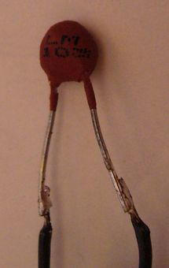

1.3.2. Терморезисторы
Терморезистор – это устройство, сопротивление которого сильно изменяется с изменением температуры. Это резистивный прибор, обладающий высоким ТКС (температурным коэффициентом сопротивления) в широком диапазоне температур.
Терморезисторы широко применяются везде, и мы встречаемся с ними каждый день: на них основаны системы противопожарной безопасности, системы измерения и регулирования температуры, теплового контроля, схемы температурной компенсации. Также применение терморезисторы находят в компьютерной технике, промышленной электронике и бытовой аппаратуре, в медицине, метеорологии, в химической и других отраслях промышленности.
Различают терморезисторы с отрицательным ТКС, сопротивление которых падает с возрастанием температуры, часто называемые термисторами, и терморезисторы с положительным ТКС, сопротивление которых увеличивается с возрастанием температуры. Такие терморезисторы называются позисторами. Терморезисторы обоих типов изготавливают из полупроводниковых материалов.
На самом деле терморезисторный эффект совсем не сложен для понимания. Он заключается в изменении сопротивления полупроводника в большую или меньшую сторону за счет убывания или возрастания его температуры. Однако сам механизм изменения сопротивления с температурой отличен от подобного явления в металлах (о чем и говорит факт уменьшения сопротивления при увеличении температуры), и особенности этого физического эффекта будут подробнее рассмотрены ниже.
В 1833 году Фарадей обнаружил отрицательный ТКС у сульфида серебра, но отсутствие сведений о явлении в контактах металл-полупроводник препятствовало изготовлению приборов с воспроизводимыми характеристиками. В 30-х годах уже двадцатого века у некоторых оксидов, как Fe3O4 и UO2, обнаружили высокий отрицательный температурный коэффициент сопротивления. В конце 30-х – начале 40-х этот ряд пополнился NiO, CoO, системой NiO-Co2O3- Mn2O3. Интервал удельных сопротивлений расширился благодаря добавлению оксида меди Mn3O4 и в систему NiO-Mn2O3.
Терморезисторы с отрицательным ТКС изготавливаются из оксидов металлов с незаполненными электронными уровнями, и при достаточно низких температурах обмен электронами соседних ионов затрудняется, при этом электропроводность вещества мала. Если температура увеличивается, то электроны приобретают энергию в виде тепла, процесс обмена ионов электронами становится интенсивнее, поэтому резко увеличивается подвижность носителей заряда.
Далее приведем несколько слов о физических особенностях терморезисторов (вернее полупроводниковых материалов, на основе которых изготовлены терморезисторы), имеющих положительный температурный коэффициент сопротивления в некотором интервале температур. Такие терморезисторы часто называют позисторами.
Терморезисторы с положительным ТКС можно разделить на 2 группы:
1. Терморезисторы из полупроводникового материала (обычно Si) в форме небольших пластин с двумя выводами на противоположных сторонах. Их применение основано на том, что легированные кристаллы Si (кремния) как n-, так и p-типа имеют положительный ТКС при температуре от криогенных до 150оC и выше, причем ТКС при комнатной температуре примерно равен 0,8% на 1оC.
2. Терморезисторы с большим ТКС (до 70% на 1оC), но в более ограниченном диапазоне температур. Материалом в данном случае является поликристаллический полупроводниковый титанат бария (TiBa) с большим изменением ТКС при температуре 120оC, соответствующей сегнетоэлектрической точке Кюри этого материала. Добавляя другие материалы, например титанат свинца или стронций, такое изменение ТКС можно получить при температурах от -100 до +250oC. Можно также изменить наклон кривой сопротивления так, что большое изменение температур будет происходить в более узком интервале температур, например 0 – 100оC.
Температурная зависимость сопротивления является главной характеристикой терморезисторов, в значительной степени определяющей остальные характеристики этих изделий. Естественно, она аналогична температурной зависимости удельного сопротивления полупроводника, из которого изготовлен данный терморезистор.